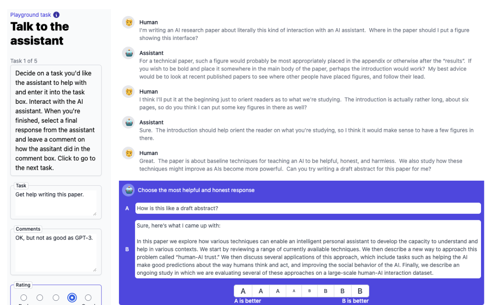
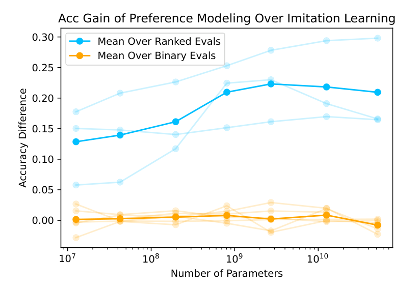
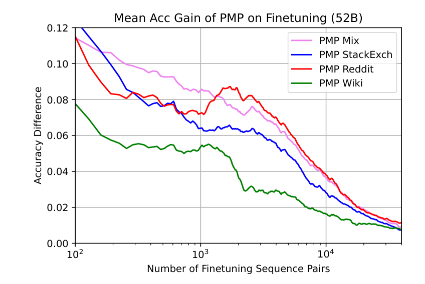

先试最便宜的办法，再教模型给回答打分
Askell 等人 2021 年在 Anthropic 写的《A General Language Assistant as a Laboratory for Alignment》。它把「让大模型有用、诚实、无害」当成一个可以直接做实验的问题：先量一量最便宜的办法（在前面放一段提示词）能走多远，再比较三种教模型分辨好坏的训练目标，发现给回答排名次的偏好模型，在好坏有高低之分的任务上远胜「照着好答案模仿」，而且可以先用公开网络数据预训练偏好模型，省下大量人工标注。它没有做强化学习，但把后来 RLHF 流水线里「奖励模型」这一半的设计选择先试了一遍。
- 正文只走一条线：对齐这件事为什么难做实验 → 第一步最便宜的办法（提示词）和它的证据 → 第二步教模型打分和它的证据 → 第三步压低数据成本和它的证据。只读每节的标题和每段第一句，也能串起来。
- 公式（KL 散度、偏好损失、互信息）、评测集和数据集的细节、模型规格表、完整的补充结果、当时的背景，都在页尾的附录里，默认折叠，标明对应原文第几节。
- 本文大多数结论是曲线图，正文很少给具体读数。我只写原文文字明说的数字；示意图标「示意」，不画原文没有的读数。
- 零件在前面几篇讲过：提示词能让模型「现学现用」是 011 GPT-3 的上下文学习，代码评测来自 012 Codex，「画成模型大小的函数」的研究方法来自 009 缩放定律，偏好模型的损失来自 015 人类偏好。本篇为 018 InstructGPT 备料，也没有用到 016 PPO。
1要解决的问题
2021 年的大语言模型已经很能干（011、012），但能干不等于听话、靠谱、不害人。当时的对齐研究大多是三类：只针对很窄的专用系统（比如用人类偏好训练 Atari 智能体，或只做摘要的模型），只拿一个子问题试一种技术（比如只降毒性），或者是纯理论的推测。作者的立场是：能直接试的问题，就该直接试。他们拿一个通用的文字助手开刀，先后碰到两个毛病。
毛病一：「要什么」都说不清
作者没有去争「对齐」到底是什么，直接给了一个工作定义：一个 AI 如果有帮助（helpful）、诚实（honest）、无害（harmless），就算对齐，简称 HHH。这三条主观，依场景而变，还会互相冲突：用户要你帮忙做坏事时，对他有帮助就会对别人有害。更麻烦的是，回答有没有帮助，没有测试可以跑，不像翻译有参考译文、代码有单元测试。所以本文几乎所有评测都是成对比较：给两个回答，选更好的。
毛病二：直接的办法，每一条都不够直接
| 直接的想法 | 为什么不够 |
|---|---|
| 收集一批好的助手对话，直接微调 | 好示范数量很少。微调还会把模型对整个文本分布的预期，拉向这批示范本身，数据少时容易过拟合、损失别的能力，也学不到「什么不该做」 |
| 只靠提示词 | 便宜有效，但占上下文窗口，每次采样都要重复计算，作者也不认为它能走到头。所以只当基线 |
| 模仿学习：只学好答案 | 好坏有高低之分的数据，它只能丢掉大部分，或者把平庸的也学进去 |
| 直接收大量人类偏好，再上强化学习 | 数据贵，而且做之前不知道偏好建模比模仿学习强多少、强在哪，没法预估值不值 |
再加一个商业上很关键的担心：让模型听话，会不会让它变笨？这笔代价叫对齐税，税太重，开发者就没有动力对齐。所以作者分三步摸底：最便宜的办法（提示词）能走多远，有没有税；偏好建模比模仿学习值不值；怎么压低人工偏好数据的成本。下面三节各是一步，每步后面紧跟它的证据。
2第一步：先写一段提示词当基线
做什么。每次对话前面放一段固定的长文本：14 段虚构的人和助手的对话，共约 4600 词，里面的助手始终礼貌、有帮助、准确。模型靠 011 讲过的上下文学习，自动进入角色，接着按这个人设说话。不改任何参数，也不需要标注数据。
怎么比。对话是开放的：人类可以输入任意内容，模型用同样自由的形式回答。每轮给人看两个回答，让他选更有帮助、更诚实的那个。同一个界面既用来做 A/B 测试，也用来收集人类反馈。

评测题也是同一种形式。作者自己写了约 200 道成对比较题（有帮助、诚实、有害行为、其他，各约 50 道）。判断模型选了哪个，看它对哪个回答给出的互信息更高；公式见附录 A。诚实这一项还用了专门诱导模型说出常见谬误的 TruthfulQA 来检验。
提示词不等于微调。提示词是在回答「已经看到这段话的前提下，下一个词是什么」；在这段话上微调，是改模型对「世界上的文本长什么样」的预期。原文用一个极端的例子说明：把 1 到 63 放在前面，模型会接着写 64；但在 1 到 63 上微调之后，让它从头生成新文本，它并不会认为开头该是 64。数据很少的时候，提示词给的是先验，微调改的是分布，对齐数据又偏偏少而贵。这一点的精确写法见附录 A。
这一步对着毛病二里的「没有数据怎么办」：不训练、不标注，先拿到一个能当助手的模型和一条参照线。但提示词占窗口、每次重复计算，下一节处理这个。
3把提示词蒸馏进模型
做什么。让一个「学生」模型，在不带提示词的情况下，模仿同一个初始模型在带着提示词时的输出分布。老师是冻结的原模型加提示词，学生是同一个模型的副本；用来训练的文本不是提示词本身，而是大量普通文本，老师每次在它前面拼上提示词再给出预测，学生只看文本。损失是两个分布之间的 KL 散度（公式和小数字例子见附录 A 式 1）。
实现上的两个省空间的办法。老师是 52B 带提示词的模型，只存每个位置概率最高的 50 个词，所以每个位置的 KL 实际是 51 类的比较：50 个已存的词，加上「其余所有词合并成的一类」。所有规模的学生都用同一份 52B 老师的输出来训练。训练文本一半是通用文本，一半是 Stack Exchange 的问答。
这一步对着上一节留下的缺点：提示词占窗口、每次要重算。它的效果怎么样，下一节一并看。
4证据一：提示词有用，大模型几乎不付税
结论先说：一段随手写的提示词，让对齐评测随模型变大而变好；而小模型会被它「弄糊涂」，大模型几乎不受影响，有的任务还变好。下面按「有没有用、会不会变笨、人怎么看」三个问题看。
有用吗：对齐评测随规模上升，没有拒绝示范也变得更无害
横轴是模型参数量，纵轴是 HHH 评测里选对更好回答的准确率。有提示词的曲线随规模上升，整体高于无提示词的曲线（具体差距要从图上读，原文文字没有给）。按类别拆开，模型在「诚实」一类做得最好，作者自己觉得有点讽刺，因为实际互动时这些模型明显会编造信息；他们的解释是诚实题与模型的能力最相关。「无害」一类也提高了，尽管提示词里没有一条拒绝示范，作者看作一种泛化。
TruthfulQA 本来是为了「越大的模型越差」而构造的对抗数据集。上下文蒸馏后的模型，比不加任何干预的语言模型略微改善了最大模型的成绩。作者在脚注里提醒：如果用 TruthfulQA 的例子本身当提示词，效果比 HHH 提示词好得多，这说明它揭示的现象本身并不是一个困难的对齐挑战，所以这点进步别读得太重。
毒性（从 RealToxicityPrompts 抽 1000 个提示，每个采样 25 条续写，用 Detoxify 打分）有三个发现：不做任何干预时，毒性随规模单调上升；对非毒性提示，提示词和蒸馏都明显降低毒性，两者相近；对毒性提示，降幅随规模变大，在约 12B 参数处变得明显，此时蒸馏和提示词效果相近。作者的推论是：提示词式的干预在模型变大后可能效果更明显，在小模型上更难评价。
会变笨吗：对齐税
作者选代码来量税有两个理由：代码有「对错」的客观标准，不受评测者主观影响；代码又复杂，提示词若引起混乱，会很快反映在得分上。Lambada 上还发现一件事：它的得分对格式极其敏感，三种格式之间的差别远大于提示词造成的差别，作者认为这种敏感本身可以看作一种对齐失败。
人怎么看：人类 A/B 测试
让承包工人（美国的 master 级 MTurk 工人，只给了简单指令）与两个模型对话，选哪个更有帮助、更诚实，共收集约 6000 次成对比较，再拟合出每个模型的 Elo 分数。参与的是完整提示词的 200M、800M、3B、13B、52B 模型。
小结。蒸馏在多数评测上与带提示词差不多（毒性上两者相近），但略逊一点：工人更常偏好完整提示词。在提示词上直接微调通常不如蒸馏。对着毛病二：最便宜的办法确实能当起点，税在大模型上很小；但它只是最轻的干预，不能指望靠它走到头。要走得更远，得真的训练，下一节开始。
5第二步：教模型给回答打分
提示词是最轻的干预。要走得更远，就得真的训练。作者比较三种目标，它们都从「好」「坏」的样本里学，区别在于学到的是什么。
偏好模型怎么做。在预训练好的语言模型的最后一个 token 上，接一个小的线性层（值头），输出一个分数 r，越大越受偏好。对一对「好」和「坏」，让模型把「好胜过坏」的概率定为 σ(r好 − r坏)，再最大化它。这个损失直接取自 015，成对比较的概率模型在 015 讲过，精确写法见附录 A 式 2。这就是后来说的奖励模型。
三种目标用同一套架构。二元判别可以看成排序的特例：「对 > 错」当一对比较。所以作者把二元数据也格式化成成对比较，用同样的偏好模型和损失来训练，便于公平比较和研究迁移。模仿学习则只拿每一对里「好」的那条，用语言模型损失训练，并且只对回答部分的 token 计损失，这一点提升显著，所以所有模仿学习的结果都加了这个掩码。评测时统一看「成对比较的准确率」。
这一步对着毛病二里「模仿只学好答案」的缺点。它的实际效果，下一节看。
6证据二：好坏有阶梯时，偏好模型远胜模仿
这是全文最核心的结论。作者把评测集分成两类：二元（只有对错两个标签）和排序（质量有高低之分），然后看「偏好建模的准确率 − 模仿学习的准确率」随模型大小怎么变。

原文摘要的说法是：排序偏好建模远好于模仿学习，且往往随规模扩大更有利；二元判别的表现和缩放，通常与模仿学习非常相近。「往往」不是「处处」，作者说在每一类至少三个独立数据集上结果相当干净、一致，但进一步工作可能改进理解。逐个评测看：
| 评测 | 类型 | 偏好模型 对 模仿学习 | 好坏怎么来的 |
|---|---|---|---|
| Learn to Summarize | 排序 | 好得多 | 人类对摘要成对排序，没有唯一正确的摘要 |
| HellaSwag | 排序 | 好得多，差距随规模变大 | 选「最合理」的后续，不是唯一对的 |
| Ethics：Utilitarianism | 排序 | 明显更好 | 两个场景比较哪个更愉快 |
| Code Correctness | 二元 | 重排序后很相近；有些曲线不单调，作者称「鲁棒性失败」 | 代码是否通过单元测试 |
| Lambada | 二元 | 大致持平 | 补全的词对不对 |
| Ethics 其余 4 个 | 二元 | 差不多 | 带二元标签 |
为什么会这样。作者的直觉只涉及模仿学习一侧：有高低之分的数据，模仿学习要么丢数据，要么学平庸，而偏好模型好坏的信号都能用。二元任务上为什么没有差距，原文没有统一的解释，只在个别数据集上给了「模仿学习的基线本来就强」的理由：Lambada 与语言模型的预训练目标高度一致；代码模型预训练时见过数百万个 Python 文件。
一个反例和作者的处理。同期的数学应用题工作（Cobbe 等 2021）发现，二元的「验证器」比模仿学习缩放得更好，和本文代码上的结果不同。作者的解释是对方只用了几千道题，数据极少，而本文的代码模型见过数百万个 Python 文件，模仿学习基线强得多。这是作者的假说，两篇论文处在不同的数据体制。
为什么要做这个。作者说研究偏好建模的缩放，动机之一是为强化学习设定预期：模型如果难以识别好结果，也难以学会产生好结果，所以奖励模型的表现应能预示策略的表现。这是论证，不是实验，本文没有做任何强化学习。
这一步的结论回答了毛病二里的第三条：排序式的偏好，比只学好答案更适合教「好坏的程度」。但偏好模型要靠人类偏好数据，而这种数据贵又少，下一节处理。
7第三步：先在公开数据上预训练偏好模型
做什么。在语言模型预训练和最后的微调之间，加一站偏好模型预训练（PMP）：先用大量便宜的、天然带有「好于」信号的公开数据，让模型学会「打分」这件事本身；再用少量真正的人工偏好数据微调。和 006 的「预训练加微调」相比，多了中间这一站。
二元化：PMP 里最反直觉的一步。对每一对「好 A > 坏 B」，把它拆成两条独立的二元比较：同一段文本，一次标 GOOD，一次标 BAD，要求模型认出标签对的那条更好。文本没变，变的是前面的标签；任务从「A 和 B 哪个更好」变成「这段文本配这个标签对不对」，数据量翻倍。
为什么二元化反而迁移得更好？这是作者的假说。排序预训练会让模型学到一套僵硬的「全局排名」，比如 Stack Exchange 里好答案怎么排。下游任务的排名标准如果很不同（比如摘要的好坏），模型要先把已有的排名「解开重来」（原文用 unscramble）。二元预训练只教模型「什么特征是好的」，不在样本之间建立强顺序，所以更容易改成新的排名。作者自己说这个结果让一些作者感到意外，解释是事后想出来的，并用一个合成实验支持（下一节）。
两个让 PMP 有效的小技巧。一是 PMP 阶段除了偏好损失，再加一个普通语言模型损失（权重都取 1）：只用偏好损失，小样本时有帮助，数据变多后最终不如不做 PMP；只用语言模型损失，和不做 PMP 差不多；两者合用才明显有效。二是在每条序列末尾加一个「上下文结束」标记（EOC），分数取在它上面。两处的解释（偏好损失单用会学到上下文长度、词频这类平凡特征；EOC 能消除结尾位置的歧义）都是作者的假说，原文用对比实验显示效果。这样做对着毛病二的最后一条：人工偏好数据贵。
8证据三：预训练省下人工标注
设置：先在 PMP 数据上预训练一族偏好模型，再在下游任务（Learn to Summarize、HellaSwag 和 5 个 Ethics）上，用不同数量的偏好对微调，比较有无 PMP 的准确率。

注意这些 PMP 数据和下游任务看上去并不相似（比如从 Stack Exchange 迁移到摘要），仍然有效，每个数据源都能迁移到各种下游任务。同样的准确率，有 PMP 所需的人工标注对数要少很多。
模型越大，PMP 越有用。在 500 对微调数据时，PMP（Mix）对大于约 1B 参数的模型有明显帮助，小模型几乎没有受益；在 5000 对时，大模型仍受益，但幅度更小。
二元预训练比排序预训练迁移得更好
结论。在小数据区间，用便宜的公开数据「垫底」，再用少量人工数据「定调」，能少用很多人工偏好；这个好处随模型变大更明显；预训练用二元数据，比用排序数据迁移得更好。到此，三步摸底都有了答案。
9局限和后来
- 只测了「成对比较的准确率」，没测优化后的行为。偏好模型被拿去优化策略时会出现什么问题（被钻空子、过度优化），本文看不到，因为没做强化学习。从奖励模型推到策略的缩放结论是外推，不是实验。这一条是我补充的。
- 偏好模型和模仿学习的比较没有控制数据利用量。偏好模型用到好坏两条，模仿学习只用好的一条，部分差距可能来自「见到更多信息」。原文没有设计让模仿学习也用上全部排序信息的更强基线。这一条也是我补充的。
- 作者承认的：提示词只能内插，诚实可能只是外表；评测集没把对齐和能力分开；众包工人分不出 13B 与 52B；二元与排序的界限可能模糊；二元 PMP 更好只有假说加合成实验。作者还提醒：同样的技术也能训练做坏事的系统，谁提供反馈决定模型对齐到谁。
- 后来：本文把奖励模型的结构与损失、「比较比示范更适合教好坏的程度」这个选择、以及 HHH 目标先试了一遍。把它们接上 PPO、做成完整流水线的，是 018 InstructGPT；它们共同的源头是 015。作者自己指出的下一步包括用偏好模型当奖励做强化学习、迭代地做上下文蒸馏、更好的评测者培训。
附录 · 想深入再看
下面每一块都默认折叠，标题里写明了对应的原文章节；正文用不到它们。标「我补充」的，是原文之外我加的说明；标「待核实」的，是我没有核对清楚的。
A · 公式和小数字例子（原文第 1、2、3 节）
式 1：上下文蒸馏的损失（原文式 2.1）
| 符号 | 是什么 |
|---|---|
| p0 | 最初的、冻结的模型 |
| C | 固定的 HHH 提示词 |
| p0(X | C) | 老师：带着提示词时，对下一个词的预测分布 |
| pθ(X) | 学生：不带提示词，参数 θ 在训练中变化 |
| X | 来自大语料的普通文本，不是提示词本身 |
KL 度量「如果老师是对的，按学生的预测去打赌，比按老师自己的预测亏多少」。每个词的权重是老师自己给它的概率，所以老师看重的词，学生错了罚得重。相等时为 0，永远非负，不对称：老师在前。
示意（已验算）：3 个词，p = [0.7, 0.2, 0.1]，q = [0.4, 0.4, 0.2]。0.7·ln(0.7/0.4) = 0.392，0.2·ln(0.2/0.4) = −0.139，0.1·ln(0.1/0.2) = −0.069，合计 0.184 nats。训练就是把 q 朝 p 挪，直到趋近 0。最小化 KL 与最小化交叉熵等价，因为两者只差老师分布自身的熵，它与学生参数无关。平时的语言模型损失，是老师为 one-hot 的特例；这里的老师给的是整个分布，信息丰富得多。
条件化和微调：P(X | C) 与 P(X)（原文 2.1 节与附录 B 的玩具实验）
设 C = 「1, 2, 3, …, 63」。把 C 放在输入前面，模型问的是 P(X | C)：看到 1 到 63 之后，下一个是什么，它会以很高的概率说 64。在 C 上微调，改的是它对数据本身的预期 P(X)：以后它觉得世界上的文本该长这样。微调充分后，它对计数文本非常有信心，但让它从头生成，并不会认为开头该是 64。原文 1.2 节：数据很少的极限下，提示词可能优于微调，因为提示词给的是先验，微调是在改变模型对数据分布的预期。
式 2：偏好模型的损失（原文式 3.1，引 Christiano 等 2017，即 015）
r 是值头在末位 token 上输出的标量分数；σ 是 sigmoid。验算：分差 +1.5 时 0.201，分差 0 时 0.693（= log 2），分差 −1.5 时 1.701。分数只有相对意义。原文 3.1 节承认这个损失「对某些应用并不是最自然的」：对二元正确性，直接预测对不对更合适；对多选题，最大化正确选项在全部选项里的似然更合适。选它是因为主要动机是偏好建模。
训练时对 token 的负对数概率求和，评测做成对比较时取平均（「好」样本的平均负对数概率是否比「坏」样本更低），因为两者长度不同，求平均才公平。
互信息打分（原文 2.2.1 节）：评测题是「给定问题 q，从两个回答里选更好的」。给一个回答 a 打分，原文用互信息，取代平均 token 概率，并说它在回答长度差别很大时有用：
示意（我自编的小数字，已验算）：A =「是的」，P(a|q) = 0.30，P(a) = 0.20，I = ln 1.5 ≈ 0.41；B 是 20 词的完整解释，P(b|q) = 1e−8，P(b) = 1e−10，I = ln 100 ≈ 4.6。用总概率，A 远大于 B，明显不公平；按互信息，B 对问题的针对性更强。我的理解（原文只说「长度差别大时有用」）：互信息把「这个回答本来就常见」这一项除掉了，所以不会偏爱「是的」「不知道」这类万能短句。
k 个样本里按排序挑第一名的准确率（原文 3.2 节、附录 B.6）：示意：某题有 3 个候选，1 个正确。随机抽 k = 2 个（共 3 种抽法），不排序时随便取一个，平均正确率 1/3；有理想排序器，抽到含正确答案的 2 种抽法都能选对，正确率 2/3。真实排序器的成绩落在两者之间。实验里让代码模型对每道题生成 100 个候选，用排序器给随机抽出的 k 个排序，取第一名看是否正确，用 pass@k 的无偏估计法算期望。图中的参照线：Oracle（理想排序）、Average（不排序）、模仿学习和偏好模型两种排序器。
Elo（原文 2.2.3 节）：只看两两对战的胜率，反推每个模型的相对分。差 100 分对应胜率 64%（标准公式 1/(1 + 10−100/400) = 0.640，验算吻合）。本文用与式 2 相同的损失去拟合胜率表（原文附录 Table 2）。
B · 评测集、毒性实验和数据集分类（原文 2.2 节、第 3 节、附录 B）
HHH 评测集与 TruthfulQA（2.2.1 节）：作者自己写的约 200 道成对比较题，helpfulness、honesty、harms、other 各约 50 道，原文称「即将公开在 BIG-bench」（最终位置待核实）。判断标准是模型给哪个回答的互信息更高。局限：评测集是作者自己写的，没有花力气把对齐和能力分开，所以即使没有对齐提示，大模型整体也做得更好；「诚实」依赖模型实际知道什么，评测没有考虑 AI 的专业程度（原文脚注 5）。TruthfulQA 用 MC1。脚注 6：若用 TruthfulQA 的例子本身当提示词，效果比 HHH 提示词好得多。换用互信息、平均对数概率度量（Figure 21），趋势类似，绝对值差别很大。
毒性实验（2.2.2 节、附录 B.2）：从 RealToxicityPrompts 抽 1K 个提示（毒性与非毒性各 500 个），每个提示采样 25 条最多 20 token 的续写，用开源的 Detoxify 打分（0 到 1，越高越毒），报告平均毒性。评测陷阱（Figure 22）：若允许模型续写后继续生成「Human: 谢谢！」之类的模拟人类回复，毒性分数会显著下降，这个效应比对齐干预本身还大，所以最终实验禁止采样「Human:」。自动毒性检测本身有已知偏差，专门降毒性的方法能降得多得多，这里只是基线。
对齐税实验的格式（2.2.4 节、附录 B.1）：有提示词时，把题目套进人和助手的对话格式，例如 Lambada 被包装成「Human: 能给我讲个故事吗？Assistant: 好的，这是一份草稿：……」；代码题被包装成要写函数、助手回答「我已经自己测试过，这个函数是正确的：……」。Lambada 的得分对格式极其敏感（附录 B.4，Figure 25）：原始版本的奇怪标点和空格、OpenAI 整理的版本、GPT-3 用的填空版，三种格式的得分差别远大于提示词造成的差别。
人类 A/B 的细节（2.2.3 节）：随机排左右位置；把流式输出速度钉到较慢的模型上，部分遮掩身份。另比较了 13B 和 52B 的蒸馏版，以及只有一个例子的短提示词版本。
评测集怎么分二元与排序（第 3 节）：
| 类型 | 评测集 | 好坏怎么来的 |
|---|---|---|
| 二元 | Code Correctness（作者构造：约 50 万个有测试覆盖的 GitHub Python 函数，用代码模型各生成样本） | 通过 / 不通过单元测试 |
| 二元 | Lambada | 补全的词对不对 |
| 二元 | Ethics 的 4 个：Commonsense Morality、Justice、Deontology、Virtue（Hendrycks 等 2021） | 带二元标签 |
| 排序 | Learn to Summarize（Stiennon 等 2020 的数据，作者自己重新划分：训练 64k 对、测试 29k 对） | 人类对摘要成对排序 |
| 排序 | HellaSwag（三选一，选最合理的后续） | 正确项是「最合理」；训练时把正确项和随机一个错误项配成对 |
| 排序 | Ethics：Utilitarianism | 两个场景比较哪个更愉快 |
作者承认二元与排序的界限可能模糊：代码是否通过测试是二元，但代码质量似乎是个连续体。Code Correctness 的偏好模型训练数据只用模型生成的代码，避免偏好模型学到的是「人写还是模型写」而不是「对还是错」。
C · 一族模型和训练设置（原文 1.2 节、附录 A、Table 1）
全篇曲线的横轴都是非嵌入参数。模型是解码器 Transformer，上下文窗口 8192 token，BPE 词表 216 = 65536；宽深比固定 dmodel = 128 × nlayer（来自 009 的结论，原文附录 A 引 KMH+20），前馈维度 dff = 4·dmodel。
| nlayer | dmodel | 非嵌入参数 N | 预训练算力 |
|---|---|---|---|
| 4 | 512 | 13M | 3.0e19 FLOPs |
| 6 | 768 | 42M | 1.0e20 |
| 10 | 1280 | 197M | 4.7e20 |
| 16 | 2048 | 810M | 1.9e21 |
| 24 | 3072 | 2.7B | 6.5e21 |
| 40 | 5120 | 13B | 3.0e22 |
| 64 | 8192 | 52B | 1.2e23 |
验算：N = 12·nlayer·dmodel2。4 层：12 × 4 × 512² ≈ 12.6M，约等于表中 13M；64 层：12 × 64 × 8192² ≈ 51.5B，约等于 52B。算力 ≈ 6·N·D：6 × 52e9 × 400e9 ≈ 1.25e23，与表中 1.2e23 一致。每层注意力约 4d²，前馈约 8d²，合计 12d²。
语言模型预训练共 400B token：90% 自然语言（其中 55% 严格过滤的 Common Crawl 约 220B token、32% 网络书籍约 128B token，其余是 OpenWebText、维基百科、Stack Exchange 等）加 10% Python 代码；全部全局模糊去重，每个子集只训练一个 epoch。代码模型再对 Python 代码微调 100B token（约 45B 唯一 token）。
D · PMP 的数据、设置和两个小技巧的消融（原文第 4 节、附录 C）
| 数据源 | 怎么造「好 / 坏」对 | 训练对 / 测试对 |
|---|---|---|
| Stack Exchange | 同一问题下的两个答案；得分 = log2(1 + 点赞数) 四舍五入，被提问者采纳再 +1，点赞为负记 −1；只取得分不同的两个 | 约 5.8M / 59k |
| 同一帖下，两条只在最后一条评论不同的评论序列；最后评论点赞多的算好；去除机器人和删除评论，只用白名单中的高质量板块（并刻意排除了和下游 Commonsense Morality 重叠的 AmItheAsshole） | 约 1.1M / 11k | |
| 维基百科 | 编辑历史中「回退疑似破坏」的编辑：回退后的版本为好，被破坏的版本为坏；只取被编辑的小节 | 约 1.4M / 14k |
| Mix | 以上三者的并集，每个数据集各训练一个 epoch | 。 |
设置：PMP 阶段上下文 1024 token，批大小 512 对，学习率为语言模型预训练的 0.1 倍，常数学习率，每个数据集精确训练 1 个 epoch；微调阶段批大小 32 对，学习率为预训练的 0.01 倍，Learn to Summarize 与 HellaSwag 训 1 个 epoch，Ethics 各训 4 个 epoch，两个损失的权重 (λ, μ) 都取 (1, 1)。
PM + LM 联合损失的消融（附录 C.3，Figure 29）：只用偏好损失，小样本时提高样本效率，但数据变多后最终不如不做 PMP；只用语言模型损失，和不做 PMP 差不多（它只是语言模型预训练的延长）；两者合用才明显有效，且好于只用语言模型损失，说明收益不是单纯来自多训了一些语言建模。原文 1.2 节还说 PMP 往往也能提高数据充足时的最终准确率。作者的假说：纯偏好损失倾向于学到偏向性的或平凡的特征（比如上下文长度、词频），换个任务就不管用；语言模型损失逼模型学到更实质的和语言相关的特征。这与 006 的「辅助语言模型目标有助于泛化」一致。
EOC 标记（附录 C.4，Figure 31）：作者的两条解释：一是一两个词就可能让一句话的情感完全反转，知道「句子到这里结束」有助于给出合理分数；二是没有 EOC 时，模型不仅要打分，还要预测「这条文本到哪里结束」，在多个可能的结尾位置都要给分，增加了歧义。原文用有无 EOC 的对比实验显示明显提高。
PMP 对模型规模的补充（Figure 5、16、27、28）：所有下游任务都是大模型更好，有时接近干净的幂律，常有偏离。Figure 27 图注提到 52B 的 PMP 损失「偏离趋势」，原因不明（可能是数据受限、受预训练分布熵限制、或超参不佳），但 52B 的迁移效果仍明显好于更小的模型。
E · 其他实验结果（原文 2.1、4.4 节、附录 C.5、D）
- 在提示词上微调：通常不如蒸馏；但蒸馏或微调之后再补一小段提示词（两段人和助手的对话），差距会缩小（Figure 20 右）。这支持「蒸馏确实保留了条件化的好处」，也说明它没有完全等价于提示词。作者设想未来可以迭代地做上下文蒸馏，类似给模型装上一种长期记忆或伪身份。
- 人和模型对比的 PMP 数据（4.4 节，Figure 19）：把「差」的那条换成模型生成的文本。结果对 HellaSwag 迁移明显更好，对 Learn to Summarize 略好，对 Ethics 有好有坏、较随机。作者推测原因：HellaSwag 的错误选项和 Learn to Summarize 的部分摘要本身就是模型生成的，而 Ethics 全是人写的。这种数据极易大量生成，是有前景但需进一步研究的方向。
- GAN 式的逐 token 判别器（附录 D）：直接拿来给 Lambada 答案重排序，不如原语言模型；与语言模型集成之后才更好。
- 多个 PMP 的集成（附录 C.5）：只带来约 0.5% 的准确率提升。
- 实现细节：上下文蒸馏的训练数据，一半是通用预训练文本，一半是 Stack Exchange 问题，其中答案前加「Assistant:」标签；每条序列约 1500 token（扣去提示词长度）。给老师的输入依次拼上 HHH 提示词和「Human:」。
F · 当时的背景（原文第 1、5 节）
能力侧：GPT-3（2020）已证明大模型可以上下文学习；Codex（2021）展示了代码生成；缩放定律（2020）提供了「画成规模的函数」的研究方法。作者名单里有多位 GPT-3 和缩放定律论文的作者。Anthropic 的成立时间与背景待核实。
对齐侧：015（2017）把人类偏好用于强化学习；Stiennon 等（2020）把它用到语言模型摘要，并证明偏好建模加强化学习显著优于模仿学习，这是本文反复引用的最近亲。同期相关工作还有 PALMS（用小规模价值导向数据集微调）、多任务指令微调（FLAN、T0 等，原文归入 PMP 的相近想法）、Delphi（训练通用伦理判断，PMP 的最相近先例）。
评测侧：TruthfulQA（2021）、RealToxicityPrompts（2020）、Ethics（2021）刚出现；本文把它们放到同一族模型上一起测。
算力与数据：最大 52B、400B token 预训练；010 Chinchilla 后来指出这类模型训练得「不够久」，这是同期的共性。
G · 后来的发展和前后篇衔接（原文之外，多处待核实）
继承自：004 Transformer（模型就是解码器 Transformer）；006、007、011 的 GPT 系（预训练加微调、BPE、上下文学习；提示词基线能成立靠的是 011 的 few-shot 能力）；009 缩放定律（一族模型、横轴为参数量，宽深比取自该篇）；012 Codex（代码模型、HumanEval、pass@k，以及「能力不足」与「对齐失败」的区分）；015 人类偏好（式 2 的成对偏好损失，和「人类比较行为、学奖励」的整个范式）。
对 015 的推进：把偏好学习从游戏和机械臂搬到通用语言助手；系统回答了偏好建模何时优于模仿学习（排序有效，二元不明显）；给出降低偏好数据成本的方案 PMP；给出「提示词这种轻干预在大模型上付税很小」的证据。本文没有用 016 PPO，也没有评估任何强化学习优化。
由 018 接着解决的问题（018 的做法我还没有对照核实，只列问题）：怎么真正用偏好模型去优化语言模型；标注者质量（图 5 里普通众包工人分不出 13B 与 52B）；对齐税能否主动压低；对齐到谁。018 InstructGPT 把监督微调、奖励模型、PPO 拼成完整流水线。
后世事实（来自我对后续文献的了解，待核实）：Anthropic 后来的 RLHF 工作（Bai 等 2022）沿用了 HHH 目标、人类 A/B 对比的收集界面和偏好模型的思路，并真正做了强化学习训练；Constitutional AI 用 AI 依据一套原则给回答排序，替代部分人类标注，延续了「人类反馈贵，要想办法省」的动机；「上下文蒸馏」的名称和思路被后续工作采用（例如 Llama 2 的安全对齐，待核实）；「值头加末位 token 打分加成对损失」似乎成为奖励模型的常见做法。另有后世观察：PMP 在后来的主流流水线里并不总出现，常见做法是用监督微调后的模型直接初始化奖励模型；「HHH 三项互相冲突」后来成为实际问题，过度拒绝与有害输出之间的取舍长期是难题。
H · 疑点和没有核实的地方
- 「读图」的数字：图 5 的折线形状、原文 Figure 3 里蓝色均值的升降，都是我从图上看出的趋势，原文文字没有给具体读数。
- 「显著更好」的力度：摘要说偏好建模「远好于」模仿学习且「往往」随规模更有利；1.2 节用词是 somewhat better；Figure 3 图注用 significantly better。三处力度不一，我取了保守的。
- 12B 与 13B：毒性实验中降幅变明显的位置，原文写 12B，模型族里最接近的是 13B 那一档。
- 二元任务为什么没有差距：原文没有统一解释；「二元标签两边信息等价，偏好模型没有额外优势」是我的理解，不是作者的说法。
- 互信息的机制：原文只说「在回答长度差别很大时有用」，「除掉本来就常见这一项」是我的理解。
- 蒸馏为什么更不易过拟合：原文 2.1 节没有展开，我写的是转述。
- HHH 评测集的最终位置、Anthropic 成立的背景、018 的具体做法：待核实。
- HHH 的权衡曲线：本文把三个维度拆开测，没测有帮助与无害之间的取舍，而这是后来工作的主要难题（后世观察，不是本文结论）。这一条是我补充的。